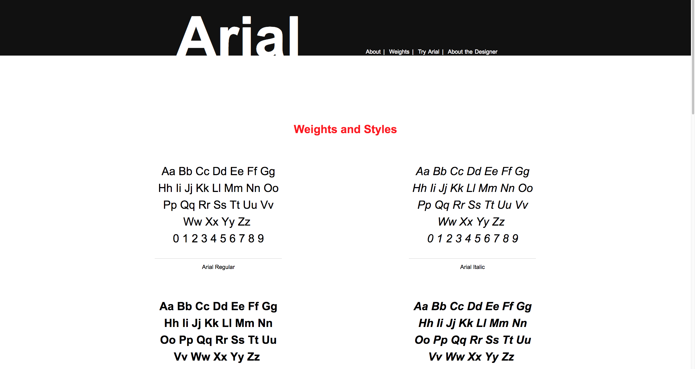
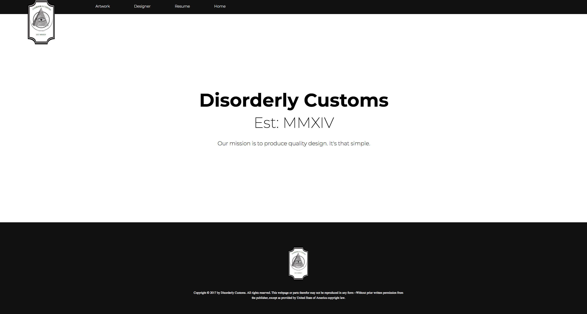

The first site we concord as a class was the Ebb & Flow project. The goal of this project was to teach us the basic of html and css as well as introduce us to ideology of responsive web design and taught us the put the mobile browser
The second challenge issued to us was to make a typeface sample. The goal of this project was to
